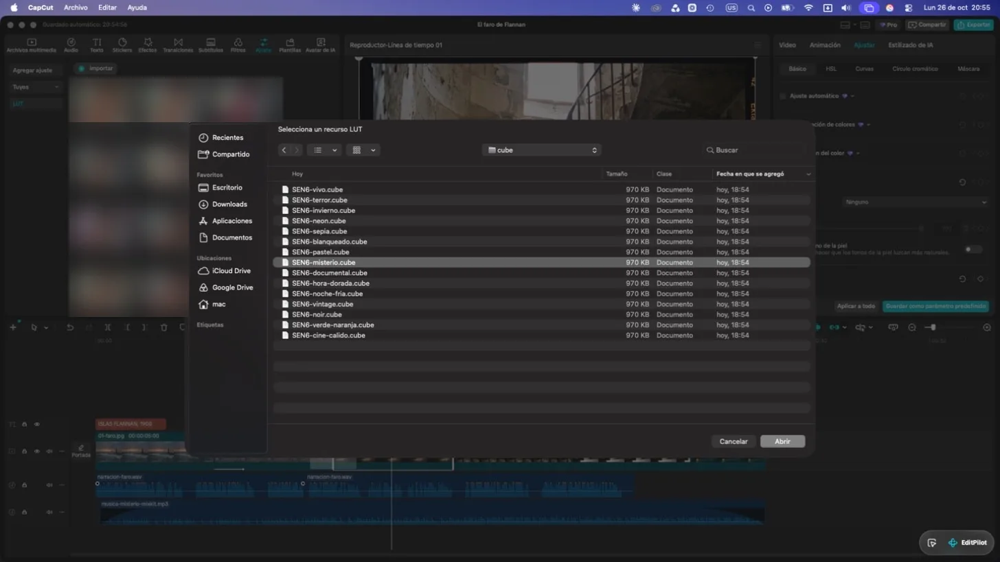
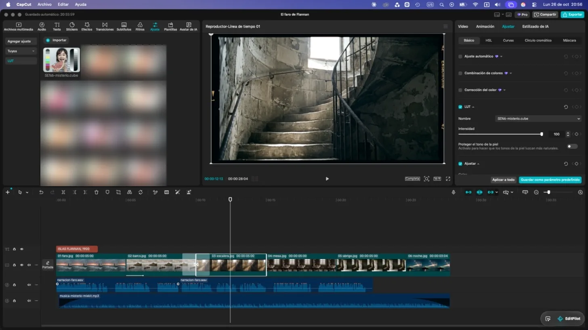
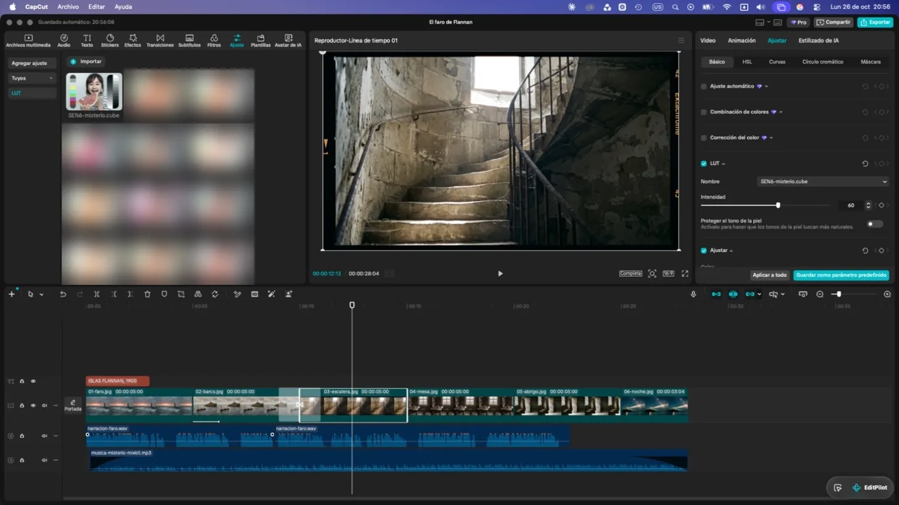
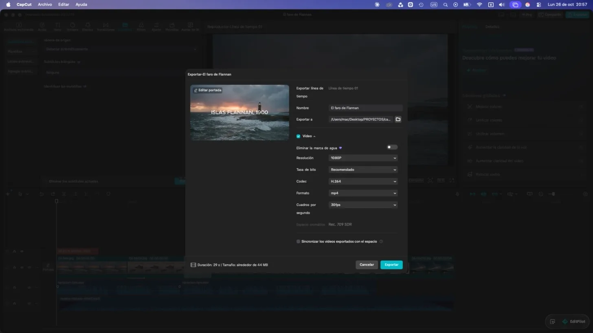
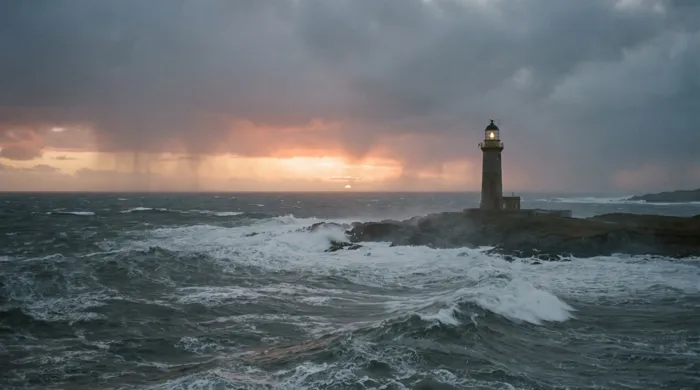
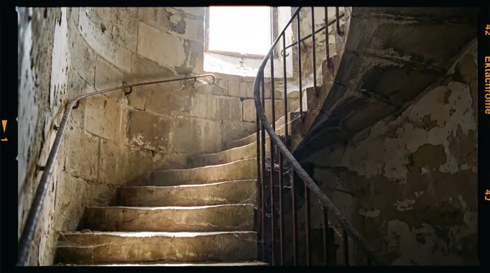
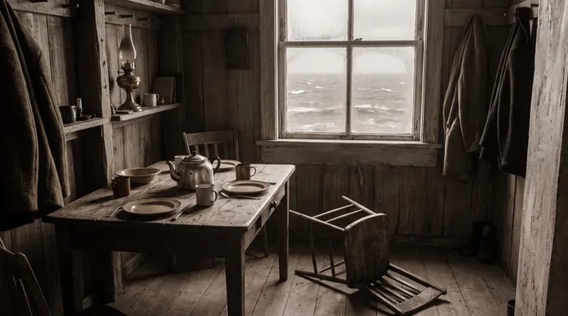
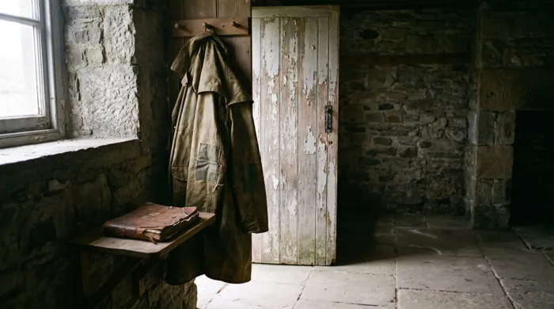

Los atajos reales de CapCut, recetas de edición para tu nicho, 15 LUTs gratis hechos por SEN6 y la checklist para exportar a YouTube sin errores. Todo comprobado en CapCut, no sacado de internet.
Sacados de la ventana oficial de atajos de CapCut 9.5. Pasá el mouse por un atajo para verlo en el teclado, o apretalo de verdad: la página te dice qué hace. Con el modo práctica los aprendés en 5 minutos.
Por ejemplo ⌘ B (en Windows Ctrl B): divide el clip donde está el cabezal.
La lista oficial que capturamos es la de Mac. En Windows, CapCut usa Ctrl donde Mac usa ⌘ y Alt donde usa ⌥. Si alguno no responde en tu compu, abrí el ícono de teclado arriba a la derecha de CapCut: ahí está tu lista y hasta podés cambiarlos.
Cada nicho tiene su ritmo. Elegí el tuyo y vas a ver la receta como si fuera una línea de tiempo: qué pasa en cada pista, qué LUT usar y el error que más se repite.
Son puntos de partida, no leyes. Mirá los videos que mejor funcionan en tu nicho, contá cada cuántos segundos cambian las imágenes y ajustá la receta a lo que ves.
Los hicimos en SEN6, así que los podés usar en videos monetizados sin problemas de licencia. Arrastrá la línea de cada foto para ver el antes y el después. Importarlos en CapCut es gratis: no hace falta Pro.

En la barra de arriba tocá Ajuste, después LUT a la izquierda y Importar. Elegí el archivo .cube que bajaste.

Seleccioná la imagen o el clip. A la derecha, en Ajustar, buscá LUT y elegilo en Nombre. Si querés, después tocá Aplicar a todo.

Al 100 % casi siempre es demasiado. Probá entre 50 y 70 y usá el mismo LUT en todo el video para que el color sea parejo.
Tildá cada punto antes de exportar. La lista se guarda en tu navegador; cuando termines un video, reiniciala para el próximo.





El mismo material que usamos en el video: 6 imágenes y 25 segundos de narración con un silencio largo puesto a propósito para que practiques el corte.